TAINÁROCHA, surfista profissional
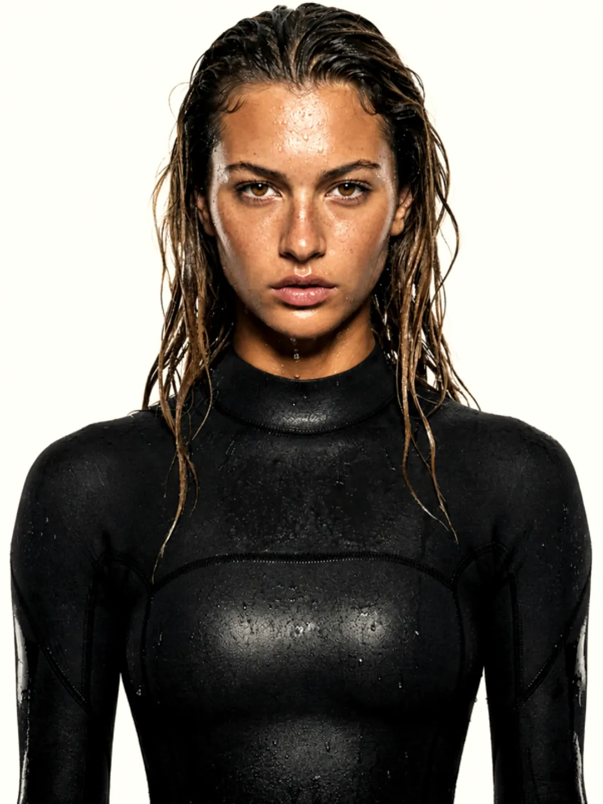

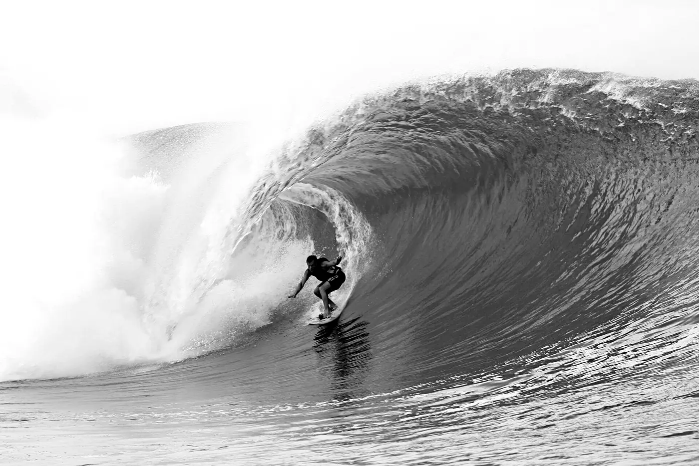
Redefinindo limites, brigando por notas, dando tudo em cada onda. Construindo um legado no surfe dentro e fora d'água.
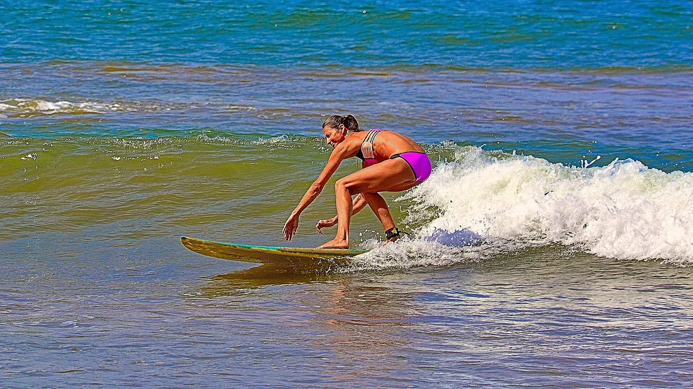
Não importa de onde você sai. Importa como você rema de volta.

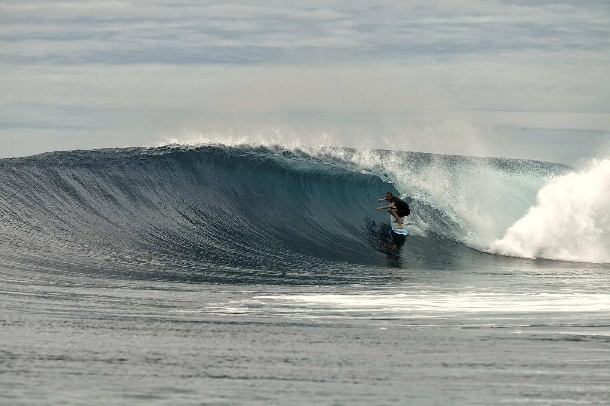
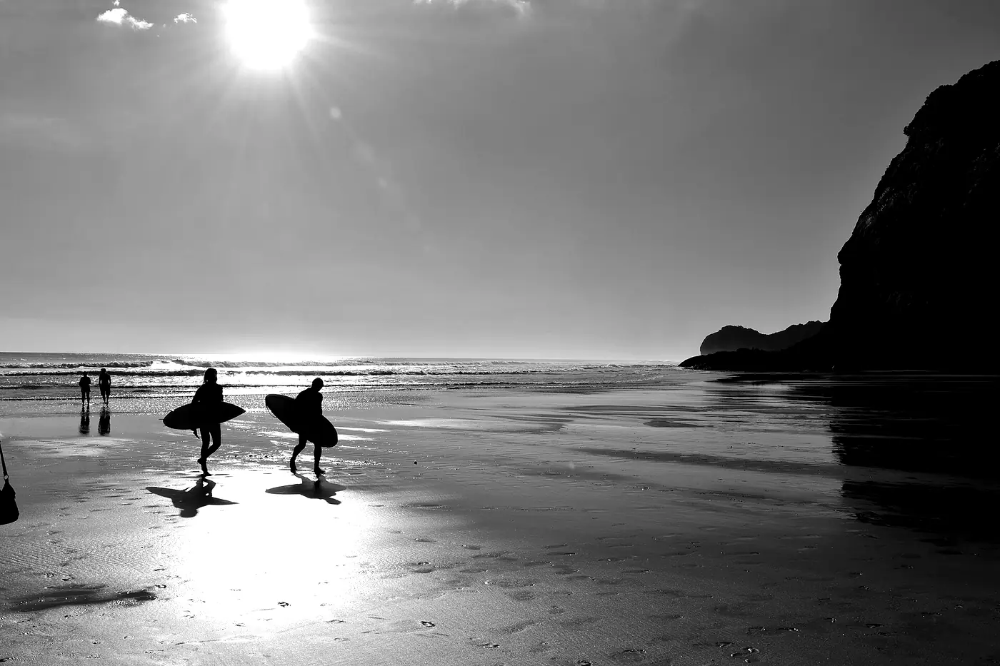
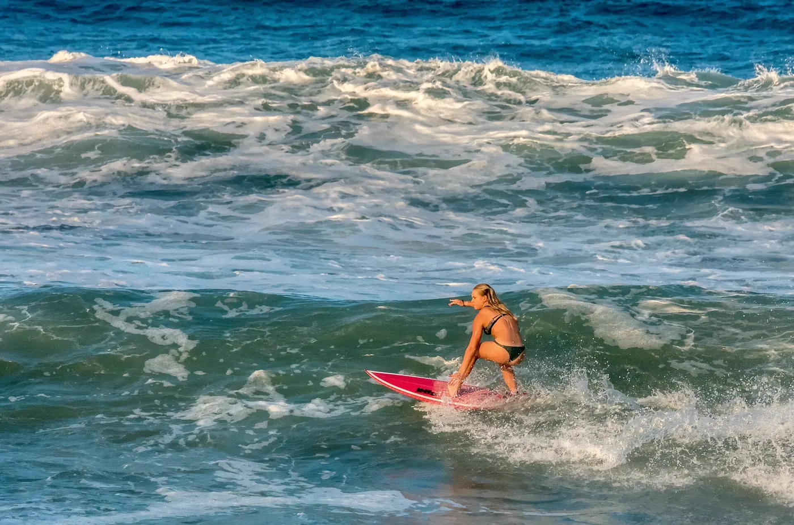
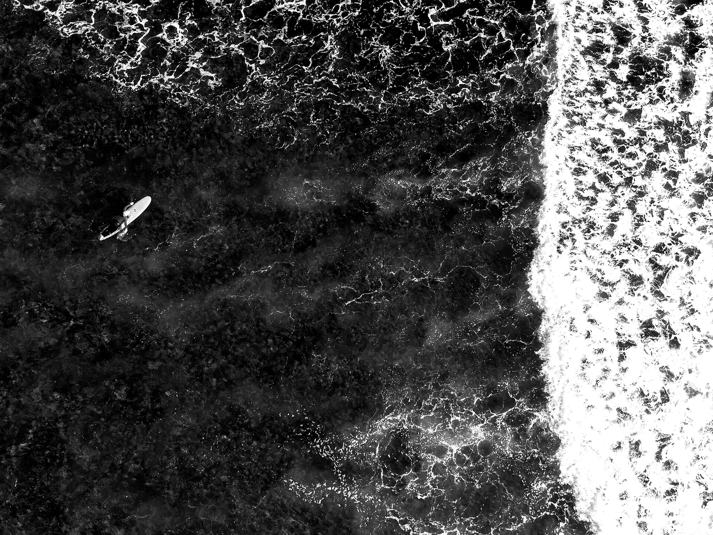
Comecei com 7 anos numa prancha emprestada. Desde então, remo todo dia para transformar esse sonho em rotina.
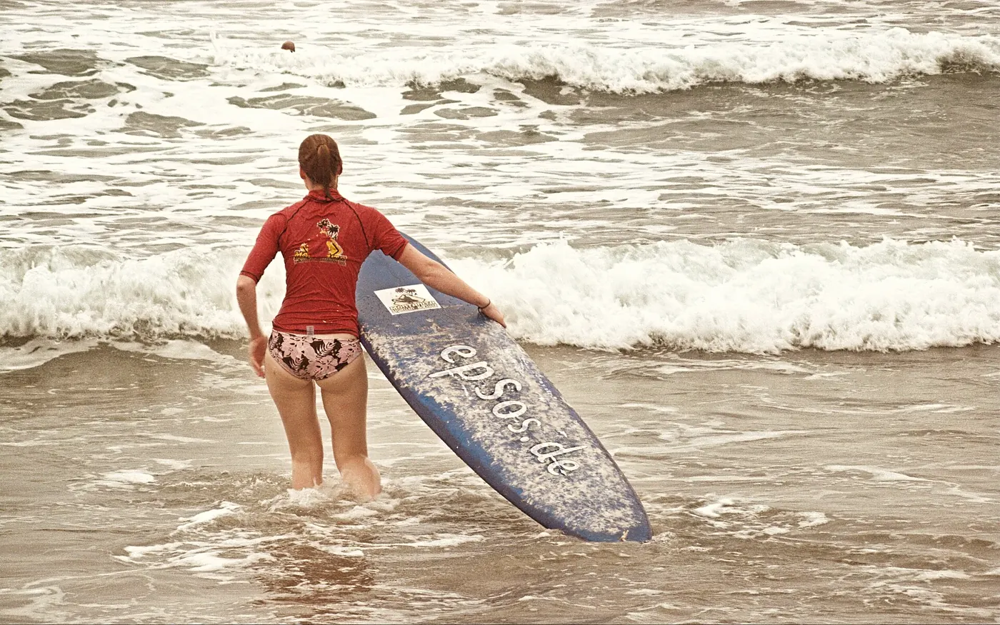
DENTROFORA d'água e fora d'água
Resultados, notas e fotos de cada etapa da temporada.
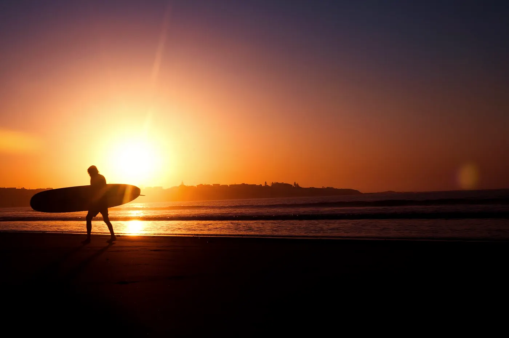
Campanhas, ensaios e o que acontece longe da arrebentação.
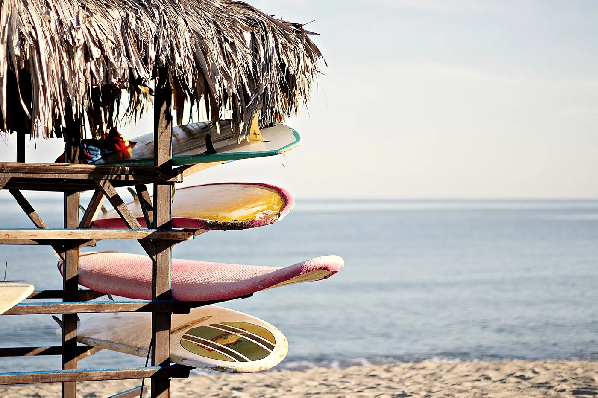
PRANCHAS
Hall da fama
Da prancha emprestada da estreia às pinturas feitas para cada etapa: as pranchas que contam a história da Tainá.
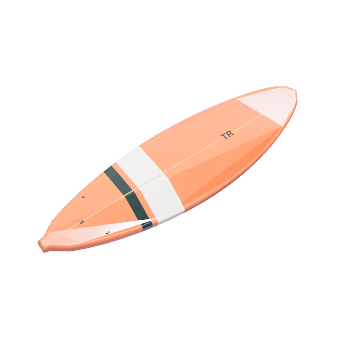
Coral2026
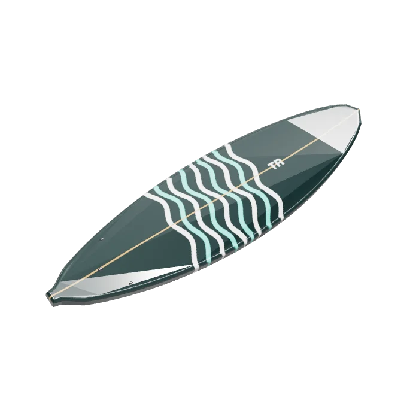
Maré Baixa2025
Saquarema2025

Noturna2024

Itacaré2024
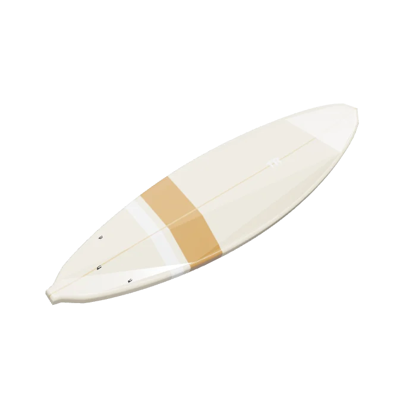
Areia2023
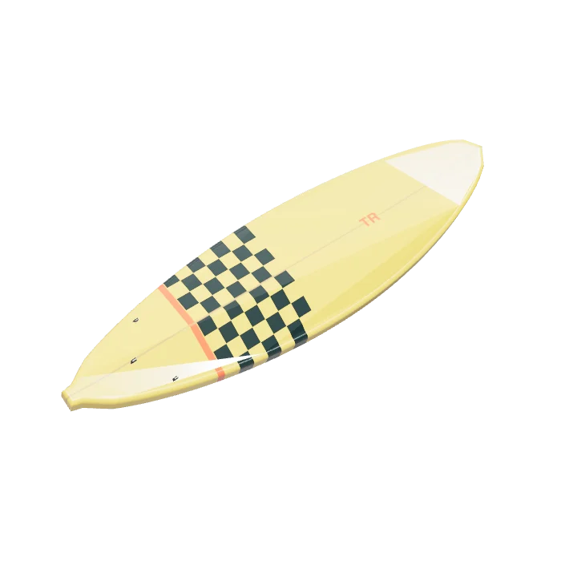
Título2023

Estreia2021
Mais pranchas e os melhores momentos dentro d'água
Ver no marLoja Tainá
COLEÇÃO
Campeã mundial
Uma coleção para celebrar o bicampeonato: peças pensadas para quem nunca parou de remar. Edição limitada.
Visitar a lojaPARCEIROS
& campanhas
A Tainá trabalha com marcas que dividem a paixão pelo mar, em campanhas dentro e fora d'água.
- QUILHA
- maré alta
- SALINA
- Vento Sul
- ATOL
- parafina co.
- ONDULA
O QUE ROLA
nas redes
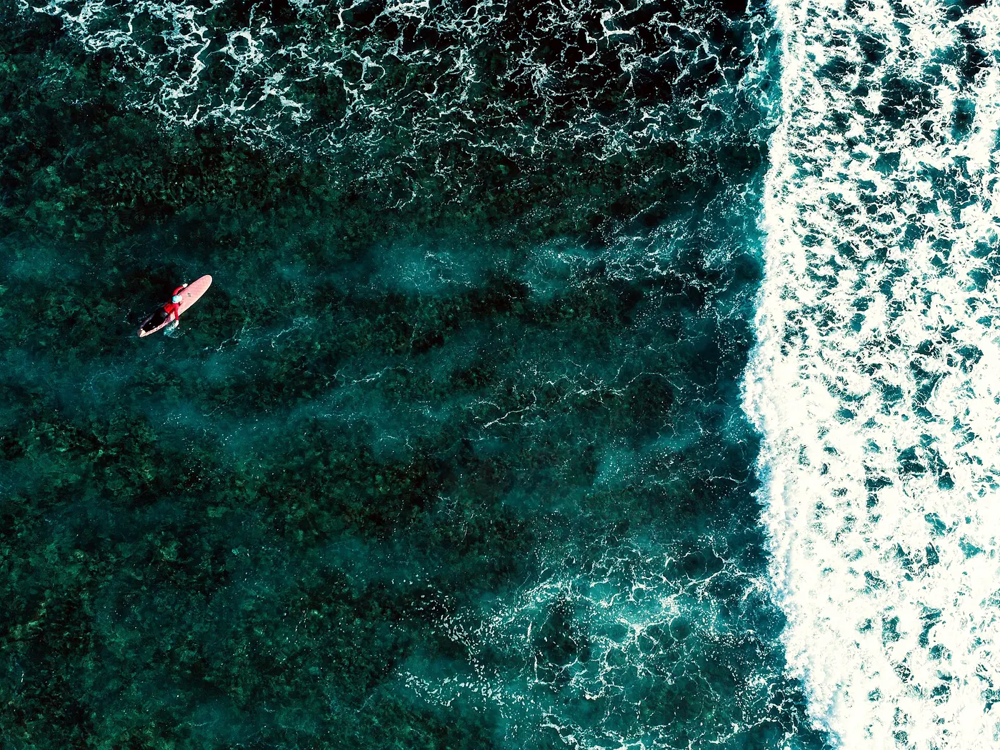


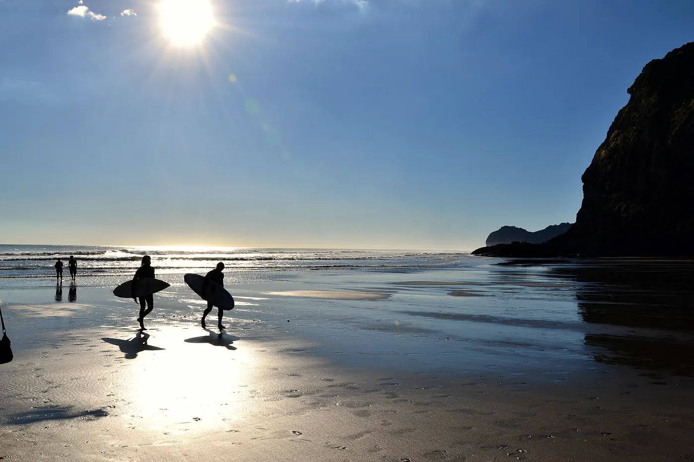